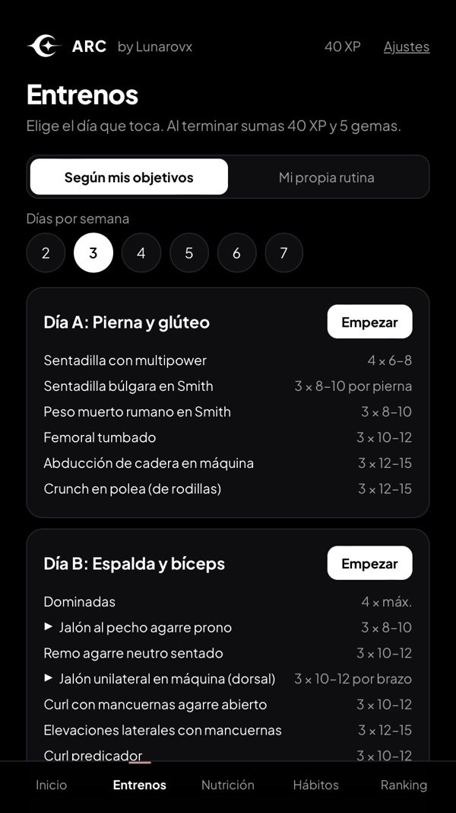
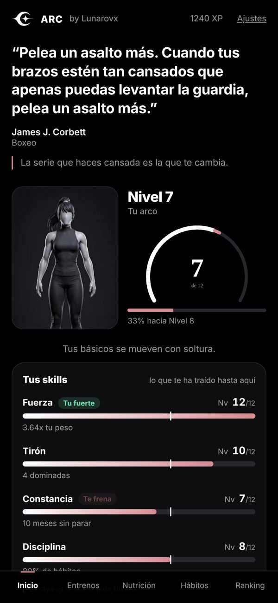
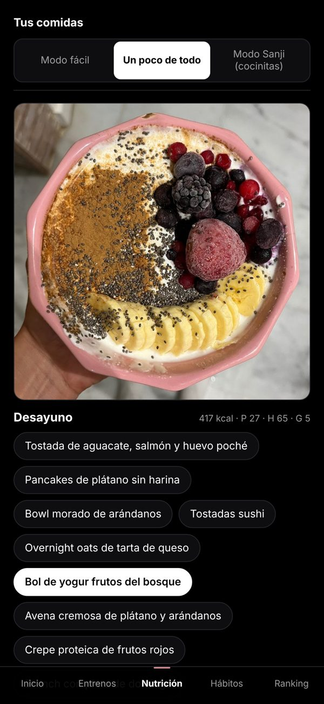

ARCby Lunarovx
¿Y si entrenar fuera un juego?
Sube de nivel con tu fuerza real, tu constancia y tus hábitos.
Muy pronto en iPhone · 3 días gratis



Tu rutinaSegún tu objetivo o la tuya propia, de 2 a 7 días.
Registra cada seriePesos, repeticiones, descansos y cuándo subir peso.
Comidas a tu medidaRecetas reales ajustadas a tus macros.
Técnica en vídeoCada ejercicio grabado en el gym de verdad.
Soporte
¿Dudas o problemas con tu cuenta o una compra? Escribe a lunaticarvcollabs@gmail.com.
Cancelar suscripción: Ajustes del iPhone → tu nombre → Suscripciones → ARC. Borrar tu cuenta: dentro de ARC, Ajustes → Eliminar mi cuenta.